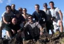
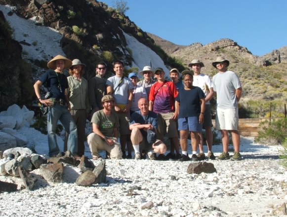
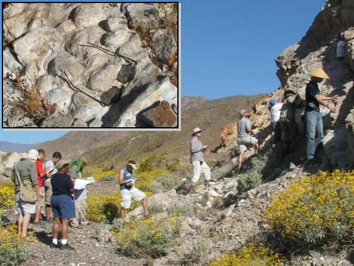
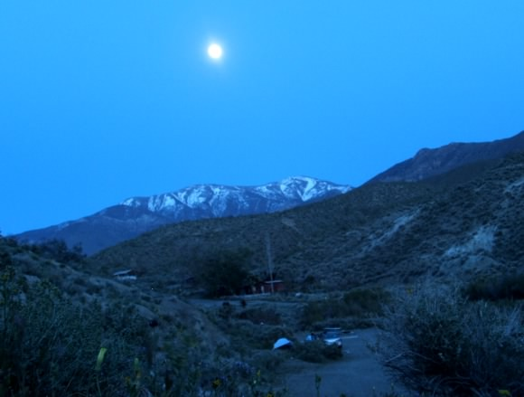
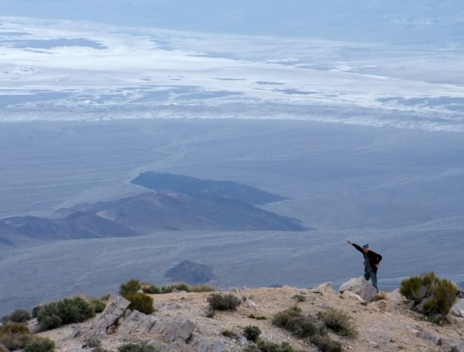
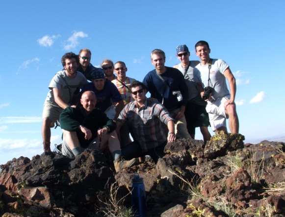
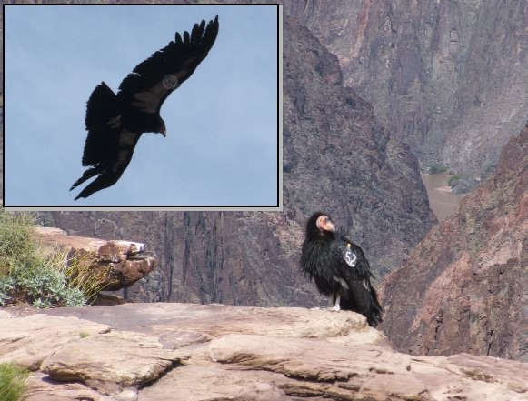
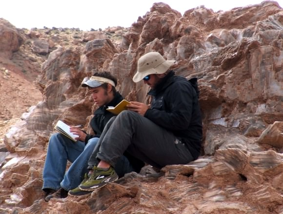

|
VIDEO hosted on YouTube |
 |
Desert
SW, 2010 Excerpts from a student's video featuring our visits to Frenchman Mountain, Resting Springs Pass, Warm Springs, Turtlebacks, San Francisco Volcanic Field, Grand Canyon, Capitol Reef, Book Cliffs, Bryce Canyon, and Zion. 13 minutes No sound |
| The 2010 goup at Warm Springs,
Death Valley. April 26, 2010 |
 |
| Students study stromatolites in
Death Valley. April 26, 2010 |
 |
| A full moon over our campsite
(Wildrose Campground), Death Valley April 26, 2010 |
 |
| A student points out the sights
from Aguereberry Point, Death Valley. April 27, 2010 |
 |
| Those that summited SP in 2010. April 28, 2010 |
 |
| Condor # 52 at Plateau Point,
in the Grand Canyon. April 29, 2010 |
 |
| Students take notes in their
throne of selenite crystals, in Cathedral Valley, Capitol
Reef. May 1, 2010 |
 |